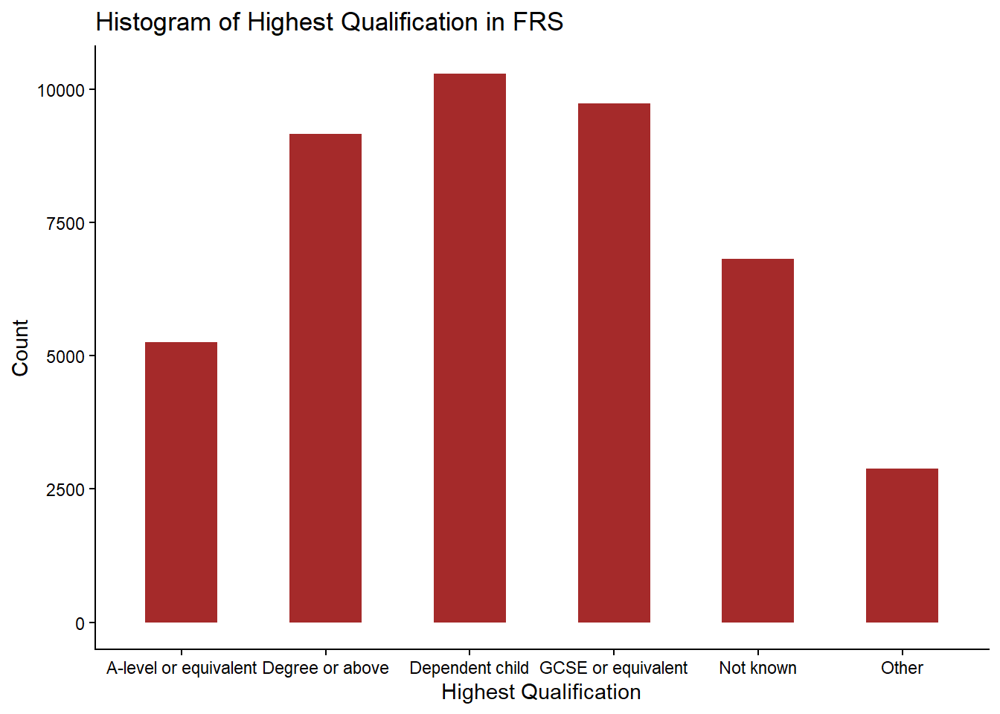
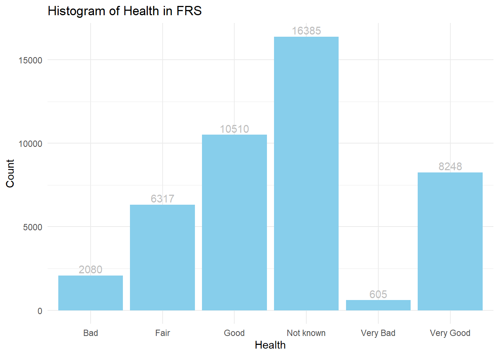
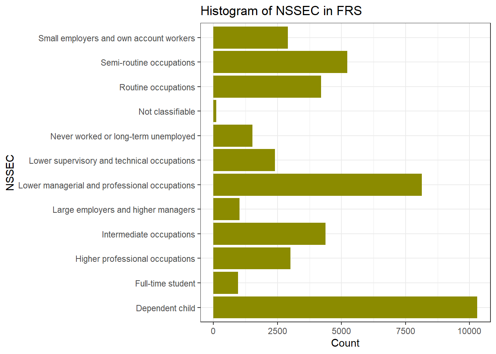
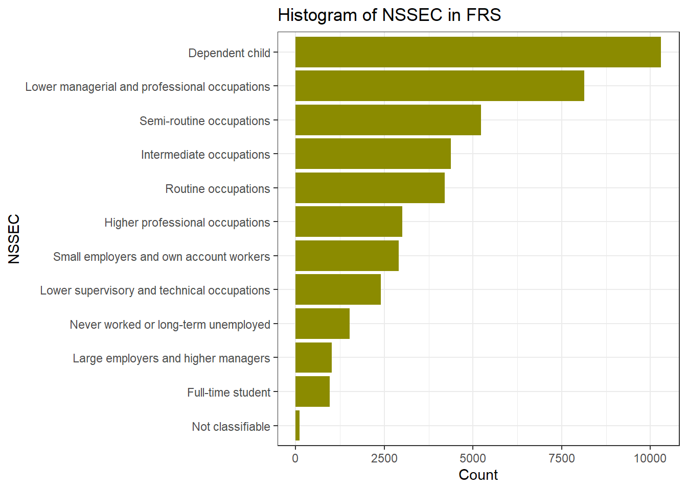
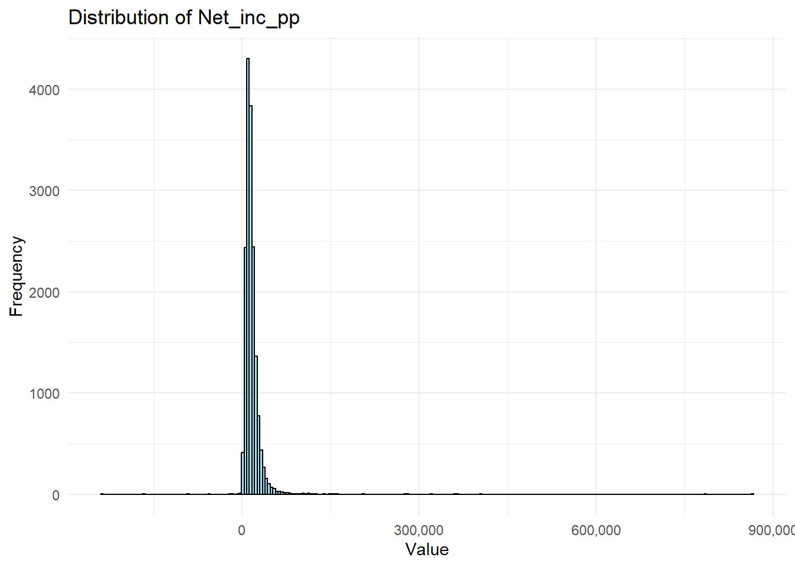

getwd()4 Lab: Correlation and Multiple Linear Regression with Qualitative Variables
The lecture’s slides can be found here.
In last week, we introduced Multiple Linear Regression (MLR) - a statistical method that models the relationship between a dependent variable and two or more independent variables, allowing researchers to examine how various predictors jointly influence an outcome. By using the following R, we create and interpret the model:
model <- lm(pct_Very_bad_health ~ pct_No_qualifications + pct_Males + pct_Higher_manager_prof, data = census)
summary(model)
In a regression model, independent/predictor variables could be continuous or categorical (or qualitative). While continuous variables capture quantitative effects, categorical variables provide insights into differences across groups. When we say categorical variables, we normally mean:
Nominal Data: categorical data without natural order. E.g. Gender, Colour, Country…
Ordinal Data: categorical data with a meaningful order. E.g. Education level, Customer satisfaction, Grade…
By blending continuous and categorical predictors, MLR with categorical variables enhances the model’s ability to reflect real-world complexities and improves interpretability, as it allows analysts to assess how each category or group within a independent variable influences the dependent variable.
For most categorical (especially the nominal) variables, they cannot be included in the regression model directly as a continuous independent variable. Instead, these qualitative independent variables should be included in regression models by using the dummy variable approach, transforming categorical information into a numerical format suitable for regression analysis.
However, R provides a powerful way, by automatively handling with such process when the categorical variable is designated as a factor and to be included in the regression model. This makes it much easier for you to use categorical variables in the regression model to assess the effects of categorical groupings on the dependent variable alongside continuous predictors.
Learning Objectives:
In this week’s practical we are going to
Analysis of categorical/qualitative variables
Estimate and interpret a multiple linear regression model with categorical variables
Make predictions using a regression model
4.1 Analysis categorical variables
Recall in Week 2, you get familiar to R by using the Census data. Today we will explore both the Family Resource Survey (FRS) and the Census data by using their categorical variables. You should already have your Census data in your local drive folder under the path of ‘/data/Census2021/’; for the FRS datasets, please click the links to download the datasets from Canvas. Please download both the datasets of ‘FRS16-17_labels.csv’ and ‘FRS_dictionary.xlxs’ for today’s practical. You may create a new folder named ‘FRS’ under the ‘/data/’ along with the Census2021 folder, and put the newly downloaded .csv files at the ‘/data/FRS/’ folder for later use.
To start today’s practical session, we first will use ‘FRS16-17_labels.csv’. You can open the .csv file in Excel and find itsdifferent from the Census dataset, the FRS dataset contains many qualitative/categorical variables, such as hh_tenure (Housing Tenure), happy (How happy did you feel yesterday?), health (How is your health in general) and etc.. To know the meaning of all the column names and the values in cell, you may need to reference to the ‘FRS_dictionary.xlsx’ to help your understanding. Recall our lecture, these categorical variable will need to be treated as Dummy variable in the regression model. In R, the variable type of qualitative/categorical variables is called ‘factor’.
As usual we first load the necessary libraries.
Some tips to avoid R returning can’t find data errors:
Check your working directory by
Check the relative path of your data folder on your PC/laptop, make sure you know the relative path of your data from your working directory, returned by getwd().
Library knowledge used in today:
dplyr: a basic library provides a suite of functions for data manipulationggplot2: a widely-used data visualisation library to help you create nice plots through layered plotting.tidyverse: a collection of R packages designed for data science, offering a cohesive framework for data manipulation, visualization, and analysis. Containing dyplyr, ggplot2 and other basic libraries.broom: a part of the tidyverse and is designed to convert statistical analysis results into tidy data frames.forcats: designed to work with factors, which are used to represent categorical data. It simplifies the process of creating, modifying, and ordering factors.vcd: visualise and analyse categorical data.
A useful shortcut to format your code: select all your code lines, use Ctrl+Shift+A for automatically format them in a tidy way.
4.1.1 Data overview
if(!require("dplyr"))
install.packages("dplyr",dependencies = T)Loading required package: dplyr
Attaching package: 'dplyr'The following objects are masked from 'package:stats':
filter, lagThe following objects are masked from 'package:base':
intersect, setdiff, setequal, union# Load necessary libraries
if(!require("ggplot2"))
install.packages("ggplot2",dependencies = T)Loading required package: ggplot2if(!require("broom"))
install.packages("broom",dependencies = T)Loading required package: broomlibrary(dplyr)
library(ggplot2)
library(broom)Or we can use library tidyverse which includes ggplot2, dplyr,broom and other foundamental libraries together already, remember you need first install the package if you haven’t by using install.packages("tidyverse").
if(!require("tidyverse"))
install.packages("tidyverse",dependencies = T)Loading required package: tidyverse── Attaching core tidyverse packages ──────────────────────── tidyverse 2.0.0 ──
✔ forcats 1.0.0 ✔ stringr 1.5.1
✔ lubridate 1.9.3 ✔ tibble 3.2.1
✔ purrr 1.0.2 ✔ tidyr 1.3.1
✔ readr 2.1.5
── Conflicts ────────────────────────────────────────── tidyverse_conflicts() ──
✖ dplyr::filter() masks stats::filter()
✖ dplyr::lag() masks stats::lag()
ℹ Use the conflicted package (<http://conflicted.r-lib.org/>) to force all conflicts to become errorslibrary(tidyverse)We will also use forcat library, so
if(!require("forcats"))
install.packages("forcats")
library(forcats)Exactly as you did in previous weeks, we first load in the dataset:
frs_data <- read.csv("../data/FRS/FRS16-17_labels.csv")Recall in previous weeks, we used the following code to overview the dataset. Familiar yourself again by using them:
View(frs_data)and also summary() to produce summaries of each variable
summary(frs_data)You may notice that for the numeric variables such as hh_income_gross (household gross income) and work_hours(worked hours per week), the summary() offers useful descriptive statistics. While for the qualitative information, such as age_group (age group), highest_qual (Highest educational qualification), marital_status (Marital status) and nssec (Socio-economic status), the summary() function is not that useful by providing mean or median values.
Performing descriptive analysis for categorical variables or qualitative variables, we focus on summarising the frequency and distribution of categories within the variable. This analysis helps understand the composition and diversity of categories in the data, which is especially useful for identifying patterns, common categories, or potential data imbalances.
# Frequency count
table(frs_data$age_group)
0-4 05-10 11-15 16-19 20-24 25-29 30-34 35-39 40-44 45-49 50-54 55-59 60-64
2914 3575 2599 1858 1929 2353 2800 2840 2790 2883 2975 2767 2775
65-69 70-74 75+
2990 2354 3743 table(frs_data$highest_qual)
A-level or equivalent Degree or above Dependent child
5260 9156 10298
GCSE or equivalent Not known Other
9729 6820 2882 table(frs_data$marital_status)
Cohabiting Divorced/civil partnership dissolved
4015 2199
Married/Civil partnership Separated
18195 747
Single Widowed
16663 2326 table(frs_data$nssec)
Dependent child
10299
Full-time student
963
Higher professional occupations
3004
Intermediate occupations
4372
Large employers and higher managers
1025
Lower managerial and professional occupations
8129
Lower supervisory and technical occupations
2400
Never worked or long-term unemployed
1516
Not classifiable
107
Routine occupations
4205
Semi-routine occupations
5226
Small employers and own account workers
2899 By using ggplot2, it is easy to create some nice descriptive charts for the categorical variables, such like what you did for the continuous variables last week.
ggplot(frs_data, aes(x = highest_qual)) +
geom_bar(fill="brown",width=0.5) +
labs(title = "Histogram of Highest Qualification in FRS", x = "Highest Qualification", y = "Count")+#set text info
theme_classic()#choose theme type, try theme_bw(), theme_minimal() see differences
ggplot(frs_data, aes(x = health)) +
geom_bar(fill="skyblue") +
geom_text(stat = "count", aes(label = ..count..),vjust = -0.3,colour = "grey")+ #add text
labs(title = "Histogram of Health in FRS", x = "Health", y = "Count")+#set text info
theme_minimal()
ggplot(frs_data, aes(x = nssec)) +
geom_bar(fill = "yellow4") +
labs(title = "Histogram of NSSEC in FRS", x = "NSSEC", y = "Count") +
coord_flip()+ #Flip the Axes, add a # in front of this line, to make the code in gray and you will see why we would better flip the axes at here
theme_bw() 
If we want to reorder the Y axis by from highest to lowest, we use the functions in forcats library. fct_infreq(): orders by the value’s frequency of the variable nssec. fct_rev(): reverses the order to go from highest to lowest.
ggplot(frs_data, aes(x = fct_rev(fct_infreq(nssec)))) +
geom_bar(fill = "yellow4") +
labs(title = "Histogram of NSSEC in FRS", x = "NSSEC", y = "Count") +
coord_flip()+ #Flip the Axes, add a # in front of this line, to make the code in gray and you will see why we would better flip the axes at here
theme_bw() 
You can change the variables in ggplot() to make your own histogram chart for the variables you are interested in. You will learn more of visualisation methods in Week 5’s practical.
4.1.2 Correlation
Q1. Which of the associations do you think is strongest? Which is the weakest?
As before, rather than relying upon an impressionistic view of the strength of the association between two variables, we can measure that association by calculating the relevant correlation coefficient.
To calculate the correlation between categorical data, we first use Chi-squared test to assess the independence between pairs of categorical variables, then we use Cramer’s V to measures the strength of association - the correlation coefficents in R.
Pearson’s chi-squared test (χ2) is a statistical test applied to sets of categorical data to evaluate how likely it is that any observed difference between the sets arose by chance. If the p-value is low (typically < 0.05), it suggests a significant association between the two variables.
chisq.test(frs_data$health,frs_data$happy) Warning in chisq.test(frs_data$health, frs_data$happy): Chi-squared
approximation may be incorrect
Pearson's Chi-squared test
data: frs_data$health and frs_data$happy
X-squared = 45594, df = 60, p-value < 2.2e-16If you see a warning message of Chi-squared approximation may be incorrect. This is because some expected frequencies in one or more cells of the cross-tabular (health * happy) are too low. The df means degrees of freedom and it related to the size of the table and the number of categories in each variable. The most important message from the output is the estimated p-value, which shows as p-value < 2.2e-16 (2.2 with 16 decimals move to the left, it is a very small number so written in scientific notation). P-value of the chi-squared test is far smaller than 0.05, so we can say the correlation is statistically significant.
Cramér’s V is a measure of association for categorical (nominal or ordinal) data. It ranges from 0 (no association) to 1 (strong association). The main downside of using Cramer’s V is that no information is provided on whether the correlation is positive or negative. This is not a problem if the variable pair includes a nominal variable but represents an information loss if the both variables being correlated are ordinal.
# Install the 'vcd' package if not installed
if(!require("vcd"))
install.packages("vcd", repos = "https://cran.r-project.org", dependencies = T)Loading required package: vcdWarning: package 'vcd' was built under R version 4.4.2Loading required package: gridlibrary(vcd)
# creat the crosstable
crosstab <- table(frs_data$health, frs_data$happy)
# Calculate Cramér's V
assocstats(crosstab) X^2 df P(> X^2)
Likelihood Ratio 54036 60 0
Pearson 45594 60 0
Phi-Coefficient : NA
Contingency Coeff.: 0.713
Cramer's V : 0.454 #you can also directly calculate the assoication between variables
assocstats(table(frs_data$health, frs_data$age_group)) X^2 df P(> X^2)
Likelihood Ratio 26557 75 0
Pearson 23854 75 0
Phi-Coefficient : NA
Contingency Coeff.: 0.592
Cramer's V : 0.329 Research Question 1. Which of our selected person-level variables is most strongly correlated with an individual’s health status?
Use the codes of Chi-test and Cramer’s V to answer this question by completing Table 1.
Table 1 Person-level correlations with health status
| Covariates | Correlation Coefficient | Statistical Significance | |
| Cramer’s V | p-value | ||
| health | age_group | ||
| Health | highest_qual | ||
| health | marital_status | ||
| Health | nssec |
4.2 Income inequality with respect to gender and health status
In this section, we will work with individual-level data (“FRS 2016-17_label.csv”) to explore income inequality with respect to gender and health status.
To explore income inequality, we need to work with a data set excluding dependent children. In addition, we look at individuals who are the representative persons of households. Therefore, we will select cases (or samples) that meet both conditions.
We want R to select persons only if they are the representative persons of households and they are not dependent children. The involved variables are hrp and Dependent for the categories “Household Reference Person” and “independent”, you can select the appropriate cases. We also want to exclude the health variable reported as “Not known”.
frs_df <- frs_data %>% filter(hrp == "HRP" &
dependent == "Independent" &
health != "Not known") Then, we create a new numeric variable Net_inc_perc indicate net income per capita as our dependent variable:
frs_df$Net_inc_pp = frs_df$hh_income_net / frs_df$hh_size
summary(frs_df$Net_inc_pp) Min. 1st Qu. Median Mean 3rd Qu. Max.
-238160 9074 13347 15834 19136 864812 The distribution of the net household income per capita can be visualised by using ggplot()
ggplot(frs_df, aes(x = Net_inc_pp)) +
geom_histogram(
bins = 250, #A higher bins value means more, narrower bars, covers smaller range of value
color = "black",
fill = "skyblue",
alpha = 0.7
) + labs(title = "Distribution of Net_inc_pp", x = "Value", y = "Frequency") + scale_x_continuous(labels = scales::label_comma()) + # Prevent scientific notation on the x axis
theme_minimal()
Our two qualitative independent variables “sex” and “health”. Let’s first know what they look like:
table(frs_df$sex)
Female Male
7647 9180 table(frs_df$health)
Bad Fair Good Very Bad Very Good
1472 4253 6277 426 4399 Remember in the lecture, what we did in the Region long-term illness before we put the categorical variable Region into the regression model? Yes. First, make sure they are in factor type and Second, decide the reference category. Here, I will use Female and Very Bad health status as my base categories. You can decide what you wish to use. This time, I use the following codes to combine these two steps in one line.
frs_df$sex <- fct_relevel(as.factor(frs_df$sex), "Female")
frs_df$health <- fct_relevel(as.factor(frs_df$health), "Very Bad")Implement the regression model with the two qualitative independent variables.
model_frs <- lm(Net_inc_pp ~ sex + health, data = frs_df)
summary(model_frs)
Call:
lm(formula = Net_inc_pp ~ sex + health, data = frs_df)
Residuals:
Min 1Q Median 3Q Max
-255133 -6547 -2213 3515 845673
Coefficients:
Estimate Std. Error t value Pr(>|t|)
(Intercept) 12115.5 762.9 15.881 < 2e-16 ***
sexMale 2091.2 240.6 8.691 < 2e-16 ***
healthBad -102.8 854.3 -0.120 0.904205
healthFair 1051.3 789.0 1.332 0.182751
healthGood 2766.0 777.4 3.558 0.000375 ***
healthVery Good 4931.8 787.8 6.260 3.95e-10 ***
---
Signif. codes: 0 '***' 0.001 '**' 0.01 '*' 0.05 '.' 0.1 ' ' 1
Residual standard error: 15530 on 16821 degrees of freedom
Multiple R-squared: 0.01646, Adjusted R-squared: 0.01616
F-statistic: 56.29 on 5 and 16821 DF, p-value: < 2.2e-16Same of what you have learnt in Week 2, the code explanation:
lm() Function:
lm()stands for “linear model” and is used to fit a linear regression model in R.- The formula syntax
Net_inc_pp ~ Sex + healthspecifies a relationship between:- Dependent Variable:
Net_inc_pp. - Independent Variables:
Sex, andhealth. The model is trained on thedata = frs_dfdataset.
- Dependent Variable:
Storing the Model: The model <- syntax stores the fitted model in an object called model.
summary(model) provides a detailed output of the model’s results, including:
- Coefficients: Estimates of the regression slopes (i.e., how each independent variableaffects
Net_inc_pp). - Standard Errors: The variability of each coefficient estimate.
- t-values and p-values: Indicate the statistical significance of the effect of each independent (explanatory) variable.
- R-squared and Adjusted R-squared: Show how well the independent variables explain the variance in the dependent variable.
- F-statistic: Tests the overall significance of the model.
The result can be formatted by:
library(broom)
tidy(model_frs)# A tibble: 6 × 5
term estimate std.error statistic p.value
<chr> <dbl> <dbl> <dbl> <dbl>
1 (Intercept) 12116. 763. 15.9 2.21e-56
2 sexMale 2091. 241. 8.69 3.90e-18
3 healthBad -103. 854. -0.120 9.04e- 1
4 healthFair 1051. 789. 1.33 1.83e- 1
5 healthGood 2766. 777. 3.56 3.75e- 4
6 healthVery Good 4932. 788. 6.26 3.95e-10Q2. What conclusions could be drawn in terms of income inequalities with respect to gender and health status? Also think about the statistical significance of these differences.
The interpretation of this table is again similar to what you have learnt in Week2, but you may find that R has automatically treat your categorical/qualitative variable Sex and Health as dummy variables, so in the output, you see sexMale, the reason there is no sexFemale is because I requested R to use sex=Female as the reference category. You also wee healthBad, healthFair, healthGood, and healthVery Good, but you didn’t see health Very Bad because agaion I request frs_df$health <- fct_relevel(as.factor(frs_df$health), "Very Bad") .
For the independent variable, the coefficient estimates of them need to be interpreted by comparing to the reference category: Male and Very Bad health. We can derive how the differences between different independent variable categories are associated with the changes in Net_inc_pp, for example:
- The association of
sexMaleis positive and strong: compare to sex=Female,sexMaleis associated with an increase of £2,091 net income per capita, here we see some gender inequality; - The association of
healthBadandhealthFairarenot statistically significant, which means we cannot draw any conclusion of the relationships betweenhealthBadandNet_inc_pporhealthFairandNet_inc_ppfrom the model ; - Then, the association of
healthGoodandhealthVeryGoodare both positive and strong:healthGoodis associated with an increase of £2,766 net income per capita compared tohealthVeryBad, andhealthVeryGoodis associated with an increase of £4,931 net income per capita compared tohealthVeryBad. Here you may draw some useful conclusion on who the health condition impact the inequality of income.
We then read R-squared and Adjusted R-squared to evaluate the model fit. We see both values are only around 0.016, which means in the model Net_inc_pp ~ Sex + health , the independent variable Sex + health can only explain 1.6% of the variation of our dependent variable Net_inc_pp. This is a relatively poor performance, and the model cannot be used to do any prediction of Net_inc_pp by using just sex and health. This also suggests us that to fully explain the Net_inc_pp , we may need to add in more variables, such as education level, occupation, age, etc. Although the model is not solid for any prediction, the coefficients and significant conclusion from the model are still very useful.
4.3 Implementing a linear regression model with a qualitative independent variable
To gain further practice on using linear regression model with qualitative variables as independent variables, we follow the model you created last week, to add in the qualitative/categorical variable Region from the Census 2021 dataset. You should already have the dataset EW_DistrictPercentages.csv, if not, you can download them from Canvas. Please put the .csv file in you ‘/data/Census2021’ folder.
Research Question 2: How does health vary across regions in the UK?
The practical is split into two main parts. The first focuses on implementing a linear regression model with a qualitative independent variable. Note that you need first to set the reference category (baseline) as the outcomes of the model reflects the differences between categories with the baseline. The second part focuses prediction based the estimated linear regression model.
First we load the UK district-level census dataset.
# load data
LAcensus <- read.csv("../data/Census2021/EW_DistrictPercentages.csv") # Local authority levelUsing the district-level census dataset “EW__DistrictPercentages.csv”. the variable “Region” (labelled as Government Office Region) is used to explore regional inequality in health.
Familiar yourself with the dataset by using the same codes as last week:
#view the data
View(LAcensus)
glimpse(LAcensus)The names() function returns all the column names.
names(LAcensus)The dim() function can merely returns the number of rows and number of columns.
dim(LAcensus) [1] 331 161There are 331 rows and 151 columns in the dataset. It would be very hard to scan throught the data if we use so many variables altogether. Therefore, we can select several columns to tailor for this practical. You can of course include other variables you are interested in also by their names:
df <- LAcensus %>% select(c("pct_Longterm_sick_or_disabled",
"pct_No_qualifications",
"pct_Males",
"pct_Higher_manager_prof",
"Region"))Simply descriptive of this new data
summary(df) pct_Longterm_sick_or_disabled pct_No_qualifications pct_Males
Min. :1.330 Min. : 6.61 Min. :46.77
1st Qu.:2.865 1st Qu.:15.06 1st Qu.:48.62
Median :3.810 Median :17.63 Median :48.98
Mean :4.013 Mean :17.90 Mean :48.97
3rd Qu.:4.800 3rd Qu.:20.41 3rd Qu.:49.30
Max. :9.110 Max. :28.88 Max. :55.02
pct_Higher_manager_prof Region
Min. : 5.49 Length:331
1st Qu.: 9.79 Class :character
Median :12.34 Mode :character
Mean :13.22
3rd Qu.:15.80
Max. :39.68 Now we can retrieve the “Region” column from the data frame by simply use df$Region. But what if we want to understand the data better, like the following questions?
Q3. How many categories do the variable “Region” entail? How many local authority districts does each region include?
Simply use the function table() would return you the answer.
table(df$Region)
East East Midlands London
45 35 33
North East North West South East
12 39 64
South West Wales West Midlands
30 22 30
Yorkshire and The Humber
21 The table() function tells us that this data frame contains 10 regions, and the number of LAs belongs to each region.
**R can only include the categorical variables in the factor type, so we set the column Region in factor()
df$Region<- factor(df$Region) 4.3.1 Include the categorical variables into a regression model
We will continue with a very similar regression model fitted in last week that relates Percentages long-term illness (pct_Long_term_sick_or_disabled) to Percentages no-qualification (pct_No_qualifications), Percentage Males (pct_Males) and Percentages Higher Managerial or Professional occupation (pct_Higher_manager_prof).
Decide which region to be set as the baseline category. The principle is that if you want to compare the (average) long term illness outcome of Region A to those of other regions, Region A should be chosen as the baseline category. For example, if you want to compare the (average) long term illness outcome of London to rest of regions in the England and Wales, London should be selected as the baseline category.
Implement the regression model with the categorical variables - Region in our case. R will automatically handle the qualitative variable as dummy variables so you don’t need to concern any of that. But you need to let R knows which category of your qualitative variable is your reference category or the baseline. Here we will use London as our first go. Note: We choose London as the baseline category so the London region will be excluded in the independent variable list.
Therefore, first, we set London as the reference:
df$Region <- fct_relevel(df$Region, "London")Similar to last week, we build our linear regression model, but also include the Region variable into the model.
model <- lm(pct_Longterm_sick_or_disabled ~ pct_Males + pct_No_qualifications + pct_Higher_manager_prof + Region, data = df)
summary(model)
Call:
lm(formula = pct_Longterm_sick_or_disabled ~ pct_Males + pct_No_qualifications +
pct_Higher_manager_prof + Region, data = df)
Residuals:
Min 1Q Median 3Q Max
-1.73799 -0.42623 -0.08528 0.41308 2.20676
Coefficients:
Estimate Std. Error t value Pr(>|t|)
(Intercept) 7.615375 3.018425 2.523 0.01212 *
pct_Males -0.167291 0.061638 -2.714 0.00701 **
pct_No_qualifications 0.251334 0.023179 10.843 < 2e-16 ***
pct_Higher_manager_prof 0.007145 0.020244 0.353 0.72438
RegionEast -0.760329 0.173260 -4.388 1.56e-05 ***
RegionEast Midlands -0.254826 0.194419 -1.311 0.19090
RegionNorth East 1.164153 0.260808 4.464 1.12e-05 ***
RegionNorth West 0.784897 0.192449 4.078 5.74e-05 ***
RegionSouth East -0.328575 0.165728 -1.983 0.04827 *
RegionSouth West 0.096484 0.214507 0.450 0.65317
RegionWales 1.382217 0.220643 6.264 1.21e-09 ***
RegionWest Midlands -0.415570 0.196345 -2.117 0.03508 *
RegionYorkshire and The Humber -0.118795 0.217473 -0.546 0.58528
---
Signif. codes: 0 '***' 0.001 '**' 0.01 '*' 0.05 '.' 0.1 ' ' 1
Residual standard error: 0.7086 on 318 degrees of freedom
Multiple R-squared: 0.7593, Adjusted R-squared: 0.7502
F-statistic: 83.6 on 12 and 318 DF, p-value: < 2.2e-16You have already learnt how to interpret the output of regression model last week: Significance (p-value), Coefficient Estimates, and Model fit (R squared and Adjusted R-squared).
Q4. Relating back to this week’s lecture notes, indicate what regions have statistically significant differences in the percentage of long-term illness, compared to London?
First, the Significance and the Coefficient Estimates. By examining the P-value, which is the last column in the output table, we can see that most of the independent variables are significant predictor of pct_Longterm_sick_or_disabled.
Similarly to last week, we learn that the changes in
pct_No_qualificationsare significantly associated with changes inpct_Longterm_sick_or_disabledat the <0.001 level (with the three asterisks *** ), which is actually an indicator of highly statistically significant, while we are less confident that the observed relationship betweenpct_No_qualificationsandpct_Longterm_sick_or_disabledare statistically significant (with the two asterisks **). Through their coefficient estimates, we learn that:The association of
pct_Malesis negative and mild: each decrease in 1% ofpct_Malesis associated with an increase of 0.17% of long term sick/disable rate in the population of EW.The association of
pct_No_qualificationsis positive and strong: each increase in 1% ofpct_No_qualificationsis associated with an increase of 0.25% of long term sick/disable rate.The association of
pct_Higher_manager_profis not statistically significant.
Now comes to the dummy variables (all the items starts with Region) created by R for our qualitative variable Region:
RegionEast,RegionNorth Eest,RegionNorth WestandRegionWalesare also statistically significant at the <0.001 level. The changes inRegionSouth EastandRegionWest Midlandsare significantly associated with changes inpct_Longterm_sick_or_disabledat the 0.05 level. The 0.05 level suggests that it is a mild likelihood that the relationship between these independent variables and the dependent variable is not due to random change. They are just mildly statistically significant.The coefficient estimates of them need to be interpreted by comparing to the reference category London. The Estimate column tells us: North East region is associated with a 1.16% higher rate of long term sick/disable than London when the other predictors remain the same. Similarly, Wales is 1.38% higher rate of long term illness than London when the other predictors remain the same. You can draw the conclusion for the other regions in this way by using their coefficient estimate values.
Reminder: You cannot draw conclusion between North East and Wales, nor comparison between any regions beyond London. It is because the regression model is built for the comparison between regions to your reference category London. If we want to compare between North East and Wales, we need to set either of them as the reference category by using
df$Region <- fct_relevel(df$Region, "North East")ordf$Region <- fct_relevel(df$Region, "Wales").RegionEast Midland,RegionSouth West, andRegionlYorkshire and The Humberwere not found to be significantly associated withpct_Longterm_sick_or_disabled.
Last but not least, the Measure of Model Fit. The model output suggests the R-squared and Adjusted R-squared are of greater than 0.75 indicate a reasonably well fitting model. The model explains 75.9 % of the variance in the dependent variable. After adjusting for the number of independent variable, the model explains 75.0% of the variance. They two suggest a strong fit of the model.
4.3.2 Change the baseline category
If you would like to learn about differences in long-term illness between North East and other regions in the EW, you need to change the baseline category (from London) to the North East region (with variable name “Region_2”).
df$Region <- fct_relevel(df$Region, "North West")The regression model is specified again as follows:
model1 <- lm(
pct_Longterm_sick_or_disabled ~ pct_Males + pct_No_qualifications + pct_Higher_manager_prof + Region,
data = df
)
summary(model1)
Call:
lm(formula = pct_Longterm_sick_or_disabled ~ pct_Males + pct_No_qualifications +
pct_Higher_manager_prof + Region, data = df)
Residuals:
Min 1Q Median 3Q Max
-1.73799 -0.42623 -0.08528 0.41308 2.20676
Coefficients:
Estimate Std. Error t value Pr(>|t|)
(Intercept) 8.400272 3.042017 2.761 0.006090 **
pct_Males -0.167291 0.061638 -2.714 0.007009 **
pct_No_qualifications 0.251334 0.023179 10.843 < 2e-16 ***
pct_Higher_manager_prof 0.007145 0.020244 0.353 0.724376
RegionLondon -0.784897 0.192449 -4.078 5.74e-05 ***
RegionEast -1.545226 0.158845 -9.728 < 2e-16 ***
RegionEast Midlands -1.039723 0.165225 -6.293 1.03e-09 ***
RegionNorth East 0.379256 0.235090 1.613 0.107685
RegionSouth East -1.113472 0.152463 -7.303 2.27e-12 ***
RegionSouth West -0.688413 0.182460 -3.773 0.000192 ***
RegionWales 0.597320 0.189607 3.150 0.001786 **
RegionWest Midlands -1.200467 0.174076 -6.896 2.89e-11 ***
RegionYorkshire and The Humber -0.903692 0.191943 -4.708 3.74e-06 ***
---
Signif. codes: 0 '***' 0.001 '**' 0.01 '*' 0.05 '.' 0.1 ' ' 1
Residual standard error: 0.7086 on 318 degrees of freedom
Multiple R-squared: 0.7593, Adjusted R-squared: 0.7502
F-statistic: 83.6 on 12 and 318 DF, p-value: < 2.2e-16Examining R-squared to measure the model fit. How robust is the new model? What % of the variance in the dependent variable has been explained?
Now, complete the following table.
| Region names | Higher or lower than North West | Whether the difference is statistically significant (Yes or No) |
|---|---|---|
| East Midlands | ||
| East of England | ||
| North East | ||
| North West | ||
| South East | ||
| London | ||
| West Midlands | ||
| Yorkshire and The Humber | ||
| Wales |
Now it is very easy to use your model to estimate the results Y (dependent variable - pct_Longterm_sick_or_disabled ) by setting all the input independent variable X (pct_Males pct_No_qualifications and pct_Higher_manager_prof).
obj_London <- data.frame(
pct_Males = 49.7,
pct_No_qualifications = 24.3,
pct_Higher_manager_prof = 14.7,
Region = "London"
)
obj_WM <- data.frame(
pct_Males = 49.8,
pct_No_qualifications = 23.3,
pct_Higher_manager_prof = 11.2,
Region = "West Midlands"
)
obj_NE <- data.frame(
pct_Males = 49.8,
pct_No_qualifications = 23.3,
pct_Higher_manager_prof = 11.2,
Region = "North East"
)
predict(model1, obj_London) 1
5.513467 predict(model1, obj_WM) 1
4.804829 predict(model1, obj_NE) 1
6.384552 4.3.3 Recode the Region variable and explore regional inequality in health
In many real-word studies, we might not be interested in health inequality across all regions. For example, in this case study, we are interested in health inequality between London, South, North, Midland and Wales. We can achieve this by re-grouping regions in the UK based on the variable “Region”. That said, we need to have a new grouping of regions as follows:
| Original region labels | New region labels |
| East Midlands | Midlands |
| East | South |
| London | London |
| North East | North |
| North West | North |
| South East | South |
| South West | South |
| West Midlands | Midlands |
| Yorkshire and The Humber | North |
| Wales | Wales |
Here we use mutate() function in R to make it happen:
df <- df %>%
mutate(
New_region_label = fct_collapse(
Region,
North = c("North East", "North West", "Yorkshire and The Humber"),
Midlands = c("East Midlands", "West Midlands"),
South = c("East", "South East", "South West"),
London = "London",
Wales = "Wales"
)
)This code may looks a bit complex. You can simply type ?mutate in your console. Now in your right hand Help window, the R studio offers your the explanation of the mutate function. This is a common way you can use R studio to help you learn what the function caate() creates new columns that are functions of existing variables. Therefore, the df %>% mutate() means add a new column into the current dataframe df; the New_region_label in the mutate() function indicates the name of this new column is New_region_label. The right side of the New_region_label = indicates the value we want to assign to the New_region_label in each row.
The right side of New_region_label is
fct_collapse(Region, North = c("North East", "North West", "Yorkshire and The Humber"), Midlands = c("East Midlands", "West Midlands"), South = c("East", "South East", "South West"), London = "London", Wales = "Wales")
By using the code, the fct_collapse() function recodes or group each value in the Region column into one of the broader categories: “London”, “South”, “North”,“Midlands” or “Wales”. Specifically, it takes the existing factor levels in Region and collapses multiple detailed regions into fewer, aggregated groups. For example, regions such as “North East”, “North West”, and “Yorkshire and The Humber” are all grouped under “North”, while “East Midlands” and “West Midlands” are combined into “Midlands”, and so on.
Now we use the same way to examine our new column New_region_label:
table(df$New_region_label)
North London South Midlands Wales
72 33 139 65 22 Comparing with the Region_label, we now can see the mutate worked:
df[,c("Region","New_region_label")]Now you will have a new qualitative variable named New_region_label in which the UK is divided into four regions: London, South, North and Midlands.
Based on the newly generated qualitative variable New_region_label, we can now build our new linear regression model. Don’t forget:
(1) R need to deal with the categorical variables in regression model in the factor type;
class(df$New_region_label)[1] "factor"The class() returns the type of the variable. The New_region_label is already a factor variable. If not, we need to convert it by the as.factor(), as we used above.
df$New_region_label = as.factor(df$New_region_label)2) Let R know which region you want to use as the baseline category. Here I will use London again, but of course you can choose other regions.
df$New_region_label <- fct_relevel(df$New_region_label, "London")The linear regression window is set up below. This time we include New_region_label rather than Region_label as the region variable:
model2 <- lm(
pct_Longterm_sick_or_disabled ~ pct_Males + pct_No_qualifications + pct_Higher_manager_prof + New_region_label,
data = df
)
summary(model2)
Call:
lm(formula = pct_Longterm_sick_or_disabled ~ pct_Males + pct_No_qualifications +
pct_Higher_manager_prof + New_region_label, data = df)
Residuals:
Min 1Q Median 3Q Max
-1.83271 -0.48362 -0.06293 0.40581 2.11961
Coefficients:
Estimate Std. Error t value Pr(>|t|)
(Intercept) 9.98363 3.20535 3.115 0.00201 **
pct_Males -0.18418 0.06585 -2.797 0.00547 **
pct_No_qualifications 0.20143 0.02257 8.924 < 2e-16 ***
pct_Higher_manager_prof -0.03410 0.01986 -1.718 0.08684 .
New_region_labelNorth 0.47416 0.18706 2.535 0.01172 *
New_region_labelSouth -0.50635 0.16433 -3.081 0.00224 **
New_region_labelMidlands -0.41031 0.18517 -2.216 0.02740 *
New_region_labelWales 1.25183 0.23431 5.343 1.73e-07 ***
---
Signif. codes: 0 '***' 0.001 '**' 0.01 '*' 0.05 '.' 0.1 ' ' 1
Residual standard error: 0.76 on 323 degrees of freedom
Multiple R-squared: 0.7188, Adjusted R-squared: 0.7127
F-statistic: 118 on 7 and 323 DF, p-value: < 2.2e-16Q5. Are there statistically significant differences in the percentage of people with long-term sick/disable between London and North, and between South and Wales, controlling for other variables? What conclusions could be drawn in terms of regional differences in health outcome?
4.4 Predictions using fitted regression model
Write down the % long term sick or disabled regression model with the new region label categorical variables.
Relating to this week’s lecture, the % pct_Longterm_sick_or_disabled is equal to:
[write down the model]
Q6. Now imagine that the values of variables pct_Males, pct_No_qualifications, and pct_Higher_manager_prof are 49, 23 and 11, respectively, what would the percentage of persons with long-term sick/disable in Wales and London be?
Check the answer at the end of this practical page.
4.5 Extension activities
The extension activities are designed to get yourself prepared for the Assignment 1 in progress. For this week, try whether you can:
Present descriptive statistics for independent variable and the dependent variable: counts, percentages, a centrality measure, a spread measure, histograms or any relevant statistic
Report the observed association between the dependent and independent variables: correlation plus a graphic or tabular visualisation
Briefly describe and critically discuss the results
Think about other potential factors of long-term illness and income, and then test your ideas with linear regression models
Summaries your model outputs and interpret the results.
4.6 Answer of the written down model and Q6
The model of the new region label is: pct_Longterm_sick_or_disabled (%) = 9.98+ (-0.1842)* pct_Males (%) + 0.2014 * pct_No_qualifications (%) + (-0.0341) * pct_Higher_manager_prof + (0.4742) * North + (-0.5063) * South + (-0.4103) * Midlands + 1.2518 * Wales. But should be aware that the relation between pct_Higher_manager_prof and pct_Longterm_sick_or_disabled is not statistically significant.
So if the values of variables pct_Males, pct_No_qualifications, and pct_Higher_manager_prof are 49, 23 and 11,
the model of Wales will be: pct_Longterm_sick_or_disabled (%) = 9.98+ (-0.1842)* 49 + 0.2014 * 23 + (-0.0341) * 11 + (0.4742) * 0+ (-0.5063) * 0+ (-0.4103) * 0+ 1.2518 * 1(you can direct paste the number sentence into your R studio Console and the result will be returned)
the model of London will be: pct_Long_term_ill (%) = 9.98+ (-0.1842)* 49 + 0.2014 * 23 + (-0.0341) * 11 + (0.4742) * 0+ (-0.5063) * 0+ (-0.4103) * 0+ 1.2518 * 0
You can also make a new object like
obj_Wales <- data.frame(
pct_Males = 49,
pct_No_qualifications = 23,
pct_Higher_manager_prof = 11,
New_region_label = "Wales"
)
obj_London <- data.frame(
pct_Males = 49,
pct_No_qualifications = 23,
pct_Higher_manager_prof = 11,
New_region_label = "London"
)
predict(model2, obj_Wales) 1
6.468668 predict(model2, obj_London) 1
5.216834 Therefore, the percentage of persons with long-term illness in Wales and London be 6.47% and 5.22 % and separately. If you got the right answers, then congratulations you can now use regression model to make prediction.